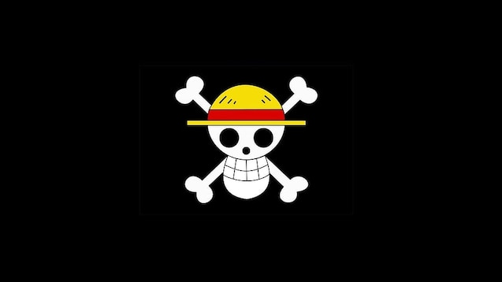
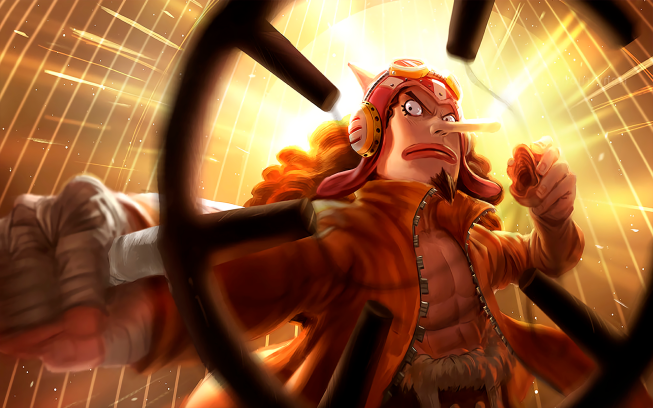
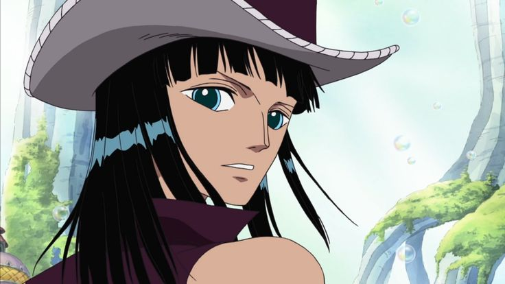
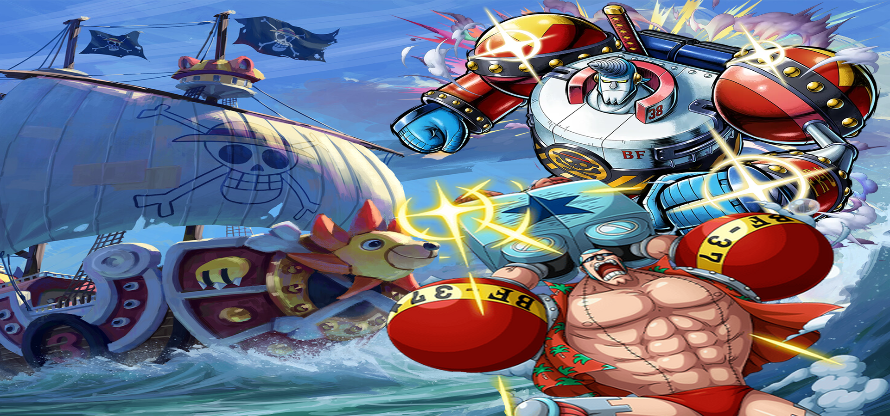
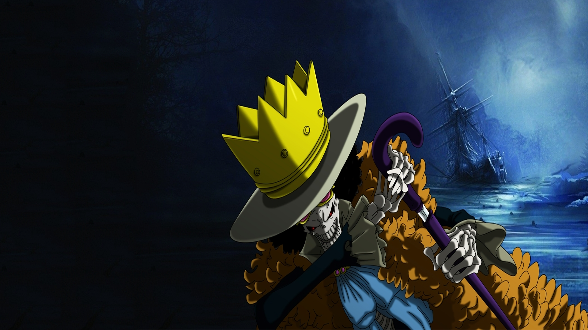
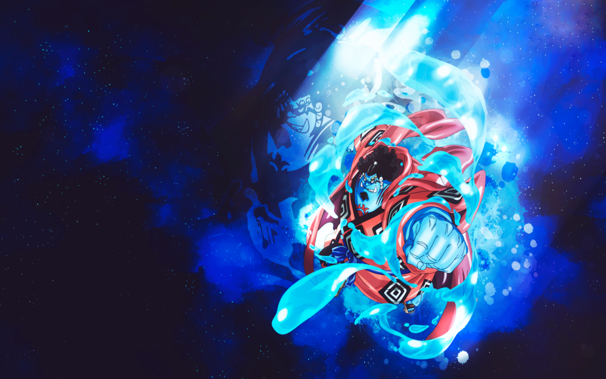

Mugiwara


Monkey D. Luffy
Capitán de los Mugiwara y futuro Rey de los Piratas.

Roronoa Zoro
Espadachín de los Mugiwara y maestro del estilo Santoryu.

Nami (Navegante)
Experta en mapas y navegación, con un gran amor por el dinero.

Usopp (Francotirador)
Un mentiroso y cobarde de buen corazón.

Sanji (Cocinero)
Un luchador que usa patadas y es un chef de élite.

Tony Tony Chopper (Doctor)
Es el médico del barco

Nico Robin (Arqueóloga)
La única persona capaz de leer los Poneglyphs, esenciales para encontrar el One Piece.

Franky (Carpintero)
Un cyborg experto en construcción naval. Creó el barco de los Sombrero de Paja, el Thousand Sunny.

Brook (Músico)
Es un espadachín y músico que ama el té y las bromas.

Jinbe (Timonel)
Un Gyojin maestro del karate Gyojin.